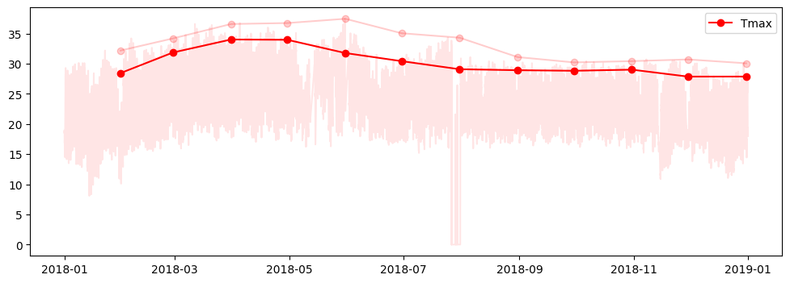
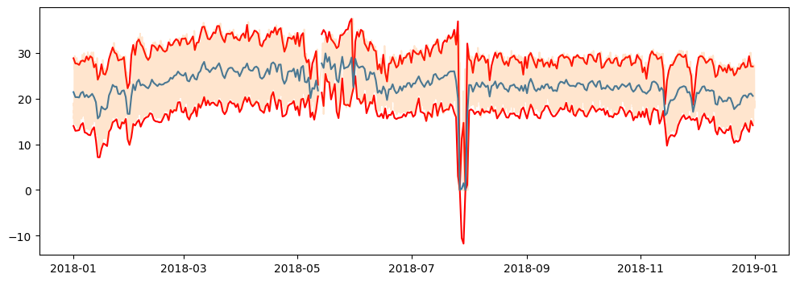
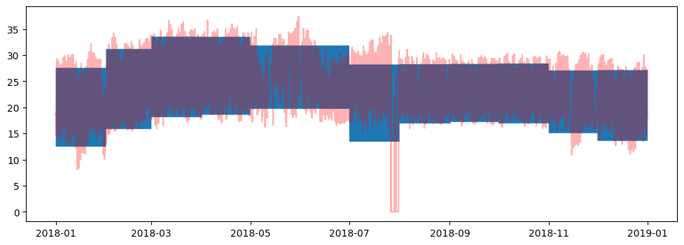
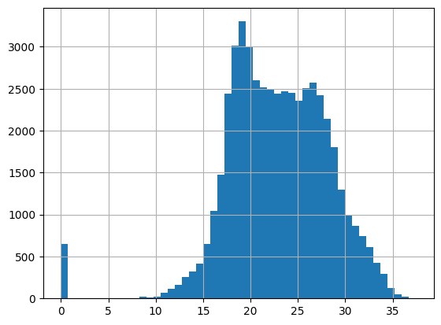

import pandas as pd
import matplotlib.pyplot as plt32 Cosas a calcular
- Promedio mensual de To del máximo diario (memo)
- Mes más cálido con la To promedio mensual (Lili)
- Amplitud diaria de la To (Fer ipn)
- Quartiles mensuales de la Ig (Nairo)
- Calcular la Ib a partir de la Ig, Id (rodolfo)
- Humedad promedio semanal (Luisa)
- Promedio mensual de la To mínima (Mitsue)
- Promedio diario mensual de la velocidad máxima del viento (Andre)
- Promedios mensual de la Ig y su visualización (Laura)
- Calcular la curva de la radiación solar del día más cálido (Fer ier)
- Dia promedio de todas las variables con máximos, minimos y desviacion estándard (yadira)
- Calculo diario/mensual/anual de la energia solar
f = "../data/002_processed/esolmet_2018.parquet"
esolmet = pd.read_parquet(f)
To_diaria_promedio = esolmet.To.resample("D").mean()
esolmet["amplitud"] = (
esolmet.To.resample("D").max() -
esolmet.To.resample("D").min()
).resample("MS").mean()
esolmet["Tpromedio"] = esolmet.To.resample("MS").mean()
esolmet.amplitud = esolmet.amplitud.ffill()
esolmet.Tpromedio = esolmet.Tpromedio.ffill()
esolmet| Ib | Ig | Id | uv | To | hr | ws | p | amplitud | Tpromedio | |
|---|---|---|---|---|---|---|---|---|---|---|
| Fecha | ||||||||||
| 2018-01-01 00:00:00 | 0.057 | 0.0 | 0.0 | 0.001 | 18.93 | 41.57 | 1.253 | 879.0692 | 15.112258 | 20.019848 |
| 2018-01-01 00:10:00 | 0.002 | 0.0 | 0.0 | 0.001 | 18.76 | 41.00 | 0.418 | 879.4363 | 15.112258 | 20.019848 |
| 2018-01-01 00:20:00 | 0.170 | 0.0 | 0.0 | 0.001 | 18.92 | 40.96 | 0.955 | 879.5181 | 15.112258 | 20.019848 |
| 2018-01-01 00:30:00 | 0.371 | 0.0 | 0.0 | 0.001 | 18.52 | 42.46 | 1.823 | 879.5826 | 15.112258 | 20.019848 |
| 2018-01-01 00:40:00 | 0.305 | 0.0 | 0.0 | 0.001 | 18.49 | 42.43 | 2.149 | 879.6826 | 15.112258 | 20.019848 |
| ... | ... | ... | ... | ... | ... | ... | ... | ... | ... | ... |
| 2018-12-31 23:10:00 | 0.125 | 0.0 | 0.0 | 0.000 | 18.88 | 59.60 | 2.145 | 875.5595 | 13.576452 | 20.362943 |
| 2018-12-31 23:20:00 | 0.000 | 0.0 | 0.0 | 0.000 | 18.71 | 59.67 | 1.638 | 875.5595 | 13.576452 | 20.362943 |
| 2018-12-31 23:30:00 | 0.044 | 0.0 | 0.0 | 0.000 | 18.52 | 58.75 | 1.923 | 875.2889 | 13.576452 | 20.362943 |
| 2018-12-31 23:40:00 | 0.170 | 0.0 | 0.0 | 0.000 | 18.36 | 60.62 | 2.089 | 875.0606 | 13.576452 | 20.362943 |
| 2018-12-31 23:50:00 | 0.003 | 0.0 | 0.0 | 0.000 | 17.99 | 60.76 | 0.744 | 875.1424 | 13.576452 | 20.362943 |
51173 rows × 10 columns
esolmet["Tpromedio"] = esolmet.To.resample("MS").mean()
esolmet["Tpromedio"] = esolmet.Tpromedio.ffill()
esolmet| Ib | Ig | Id | uv | To | hr | ws | p | amplitud | Tpromedio | |
|---|---|---|---|---|---|---|---|---|---|---|
| Fecha | ||||||||||
| 2018-01-01 00:00:00 | 0.057 | 0.0 | 0.0 | 0.001 | 18.93 | 41.57 | 1.253 | 879.0692 | 15.112258 | 20.019848 |
| 2018-01-01 00:10:00 | 0.002 | 0.0 | 0.0 | 0.001 | 18.76 | 41.00 | 0.418 | 879.4363 | 15.112258 | 20.019848 |
| 2018-01-01 00:20:00 | 0.170 | 0.0 | 0.0 | 0.001 | 18.92 | 40.96 | 0.955 | 879.5181 | 15.112258 | 20.019848 |
| 2018-01-01 00:30:00 | 0.371 | 0.0 | 0.0 | 0.001 | 18.52 | 42.46 | 1.823 | 879.5826 | 15.112258 | 20.019848 |
| 2018-01-01 00:40:00 | 0.305 | 0.0 | 0.0 | 0.001 | 18.49 | 42.43 | 2.149 | 879.6826 | 15.112258 | 20.019848 |
| ... | ... | ... | ... | ... | ... | ... | ... | ... | ... | ... |
| 2018-12-31 23:10:00 | 0.125 | 0.0 | 0.0 | 0.000 | 18.88 | 59.60 | 2.145 | 875.5595 | 13.576452 | 20.362943 |
| 2018-12-31 23:20:00 | 0.000 | 0.0 | 0.0 | 0.000 | 18.71 | 59.67 | 1.638 | 875.5595 | 13.576452 | 20.362943 |
| 2018-12-31 23:30:00 | 0.044 | 0.0 | 0.0 | 0.000 | 18.52 | 58.75 | 1.923 | 875.2889 | 13.576452 | 20.362943 |
| 2018-12-31 23:40:00 | 0.170 | 0.0 | 0.0 | 0.000 | 18.36 | 60.62 | 2.089 | 875.0606 | 13.576452 | 20.362943 |
| 2018-12-31 23:50:00 | 0.003 | 0.0 | 0.0 | 0.000 | 17.99 | 60.76 | 0.744 | 875.1424 | 13.576452 | 20.362943 |
51173 rows × 10 columns
esolmet.loc["2018-01-31 23:40":"2018-02-01 01:00"]| Ib | Ig | Id | uv | To | hr | ws | p | amplitud | Tpromedio | |
|---|---|---|---|---|---|---|---|---|---|---|
| Fecha | ||||||||||
| 2018-01-31 23:40:00 | 0.081 | 0.0 | 0.0 | 0.001 | 15.28 | 53.26 | 2.083 | 878.6181 | 15.112258 | 20.019848 |
| 2018-01-31 23:50:00 | 0.075 | 0.0 | 0.0 | 0.001 | 15.32 | 52.38 | 2.500 | 878.3397 | 15.112258 | 20.019848 |
| 2018-02-01 00:00:00 | 0.003 | 0.0 | 0.0 | 0.001 | 15.38 | 53.71 | 1.531 | 878.2341 | 15.353929 | 23.522289 |
| 2018-02-01 00:00:00 | 0.003 | 0.0 | 0.0 | 0.001 | 15.38 | 53.71 | 1.531 | 878.2341 | 15.353929 | 23.522289 |
| 2018-02-01 00:10:00 | 0.313 | 0.0 | 0.0 | 0.001 | 15.71 | 50.03 | 2.339 | 878.1605 | 15.353929 | 23.522289 |
| 2018-02-01 00:20:00 | 0.029 | 0.0 | 0.0 | 0.001 | 15.57 | 51.52 | 2.836 | 877.9796 | 15.353929 | 23.522289 |
| 2018-02-01 00:30:00 | 0.013 | 0.0 | 0.0 | 0.001 | 15.23 | 52.00 | 2.780 | 877.9725 | 15.353929 | 23.522289 |
| 2018-02-01 00:40:00 | 0.001 | 0.0 | 0.0 | 0.001 | 15.28 | 51.80 | 2.541 | 878.0463 | 15.353929 | 23.522289 |
| 2018-02-01 00:50:00 | 0.065 | 0.0 | 0.0 | 0.001 | 15.38 | 50.84 | 2.434 | 878.1319 | 15.353929 | 23.522289 |
| 2018-02-01 01:00:00 | 0.086 | 0.0 | 0.0 | 0.001 | 15.41 | 51.53 | 2.271 | 878.2111 | 15.353929 | 23.522289 |
esolmet.loc["2018-01-31 00:00":"2018-02-01 01:00"]| Ib | Ig | Id | uv | To | hr | ws | p | amplitud | Tpromedio | |
|---|---|---|---|---|---|---|---|---|---|---|
| Fecha | ||||||||||
| 2018-01-31 00:00:00 | 0.264 | 0.0 | 0.0 | 0.001 | 14.04 | 42.97 | 2.628 | 879.9633 | 15.112258 | 20.019848 |
| 2018-01-31 00:10:00 | 0.138 | 0.0 | 0.0 | 0.001 | 14.12 | 43.45 | 2.650 | 880.0983 | 15.112258 | 20.019848 |
| 2018-01-31 00:20:00 | 0.000 | 0.0 | 0.0 | 0.001 | 14.03 | 43.86 | 1.230 | 880.0222 | 15.112258 | 20.019848 |
| 2018-01-31 00:30:00 | 0.000 | 0.0 | 0.0 | 0.001 | 13.59 | 44.24 | 2.009 | 879.8823 | 15.112258 | 20.019848 |
| 2018-01-31 00:40:00 | 0.005 | 0.0 | 0.0 | 0.001 | 13.74 | 44.24 | 1.560 | 879.8358 | 15.112258 | 20.019848 |
| ... | ... | ... | ... | ... | ... | ... | ... | ... | ... | ... |
| 2018-02-01 00:20:00 | 0.029 | 0.0 | 0.0 | 0.001 | 15.57 | 51.52 | 2.836 | 877.9796 | 15.353929 | 23.522289 |
| 2018-02-01 00:30:00 | 0.013 | 0.0 | 0.0 | 0.001 | 15.23 | 52.00 | 2.780 | 877.9725 | 15.353929 | 23.522289 |
| 2018-02-01 00:40:00 | 0.001 | 0.0 | 0.0 | 0.001 | 15.28 | 51.80 | 2.541 | 878.0463 | 15.353929 | 23.522289 |
| 2018-02-01 00:50:00 | 0.065 | 0.0 | 0.0 | 0.001 | 15.38 | 50.84 | 2.434 | 878.1319 | 15.353929 | 23.522289 |
| 2018-02-01 01:00:00 | 0.086 | 0.0 | 0.0 | 0.001 | 15.41 | 51.53 | 2.271 | 878.2111 | 15.353929 | 23.522289 |
152 rows × 10 columns
33 Promedio mensual de To del máximo diario (memo)
esolmet.To.resample("D").max()Fecha
2018-01-01 29.30
2018-01-02 28.89
2018-01-03 28.12
2018-01-04 28.30
2018-01-05 29.57
...
2018-12-27 26.92
2018-12-28 27.70
2018-12-29 30.01
2018-12-30 27.76
2018-12-31 27.31
Freq: D, Name: To, Length: 365, dtype: float64esolmet.To.resample("D").max().resample("ME").mean()Fecha
2018-01-31 28.455484
2018-02-28 31.873929
2018-03-31 34.029355
2018-04-30 33.984333
2018-05-31 31.782333
2018-06-30 30.436667
2018-07-31 29.096774
2018-08-31 28.932258
2018-09-30 28.838333
2018-10-31 29.023871
2018-11-30 27.871667
2018-12-31 27.880645
Freq: ME, Name: To, dtype: float64fig, ax = plt.subplots(figsize=(12,4))
ax.plot(esolmet.To.resample("D").max().resample("ME").mean(),"ro-",label="Tmax")
ax.plot(esolmet.To.resample("D").max().resample("ME").max(),"ro-",label="",alpha=0.2)
ax.plot(esolmet.To,"r-",label="",alpha=0.1)
ax.legend()
esolmet| Ib | Ig | Id | uv | To | hr | ws | p | amplitud | Tpromedio | |
|---|---|---|---|---|---|---|---|---|---|---|
| Fecha | ||||||||||
| 2018-01-01 00:00:00 | 0.057 | 0.0 | 0.0 | 0.001 | 18.93 | 41.57 | 1.253 | 879.0692 | 15.112258 | 20.019848 |
| 2018-01-01 00:10:00 | 0.002 | 0.0 | 0.0 | 0.001 | 18.76 | 41.00 | 0.418 | 879.4363 | 15.112258 | 20.019848 |
| 2018-01-01 00:20:00 | 0.170 | 0.0 | 0.0 | 0.001 | 18.92 | 40.96 | 0.955 | 879.5181 | 15.112258 | 20.019848 |
| 2018-01-01 00:30:00 | 0.371 | 0.0 | 0.0 | 0.001 | 18.52 | 42.46 | 1.823 | 879.5826 | 15.112258 | 20.019848 |
| 2018-01-01 00:40:00 | 0.305 | 0.0 | 0.0 | 0.001 | 18.49 | 42.43 | 2.149 | 879.6826 | 15.112258 | 20.019848 |
| ... | ... | ... | ... | ... | ... | ... | ... | ... | ... | ... |
| 2018-12-31 23:10:00 | 0.125 | 0.0 | 0.0 | 0.000 | 18.88 | 59.60 | 2.145 | 875.5595 | 13.576452 | 20.362943 |
| 2018-12-31 23:20:00 | 0.000 | 0.0 | 0.0 | 0.000 | 18.71 | 59.67 | 1.638 | 875.5595 | 13.576452 | 20.362943 |
| 2018-12-31 23:30:00 | 0.044 | 0.0 | 0.0 | 0.000 | 18.52 | 58.75 | 1.923 | 875.2889 | 13.576452 | 20.362943 |
| 2018-12-31 23:40:00 | 0.170 | 0.0 | 0.0 | 0.000 | 18.36 | 60.62 | 2.089 | 875.0606 | 13.576452 | 20.362943 |
| 2018-12-31 23:50:00 | 0.003 | 0.0 | 0.0 | 0.000 | 17.99 | 60.76 | 0.744 | 875.1424 | 13.576452 | 20.362943 |
51173 rows × 10 columns
Mes más cálido con la To promedio mensual (Lili)
esolmet.To.resample("ME").mean().max(), esolmet.To.resample("ME").mean().idxmax()(np.float64(26.052599537037036), Timestamp('2018-04-30 00:00:00'))def identifica_To_mes_calido(esolmet:pd.DataFrame, columna:str = "To")-> (float, float):
"""
Recibe un df que tiene un indice que es datetime
y regresa en una tupla el valor máximo promedio To_max y el mes en el que sucede mes_max
"""
To_max = esolmet[columna].resample("ME").mean().max()
mes_calido = esolmet[columna].resample("ME").mean().idxmax().month
return To_max, mes_calidomaximos = identifica_To_mes_calido(esolmet,columna="hr")
maximos(np.float64(74.50158759546402), 9)To_max, mes_max = identifica_To_mes_calido(esolmet,columna="hr")
# print(To_max)
# print(mes_max)34 Amplitud diaria de la To (Fer ipn)
deltaTo_diaria = esolmet.To.resample("D").max() - esolmet.To.resample("D").min()fig, ax = plt.subplots(figsize=(12,4))
ax.plot(esolmet.To.resample("D").mean() + deltaTo_diaria/2,"r-",label="")
ax.plot(esolmet.To.resample("D").mean() - deltaTo_diaria/2,"r-",label="")
ax.plot(esolmet.To.resample("D").mean())
ax.plot(esolmet.To, alpha=0.2)
esolmet| Ib | Ig | Id | uv | To | hr | ws | p | amplitud | Tpromedio | |
|---|---|---|---|---|---|---|---|---|---|---|
| Fecha | ||||||||||
| 2018-01-01 00:00:00 | 0.057 | 0.0 | 0.0 | 0.001 | 18.93 | 41.57 | 1.253 | 879.0692 | 15.112258 | 20.019848 |
| 2018-01-01 00:10:00 | 0.002 | 0.0 | 0.0 | 0.001 | 18.76 | 41.00 | 0.418 | 879.4363 | 15.112258 | 20.019848 |
| 2018-01-01 00:20:00 | 0.170 | 0.0 | 0.0 | 0.001 | 18.92 | 40.96 | 0.955 | 879.5181 | 15.112258 | 20.019848 |
| 2018-01-01 00:30:00 | 0.371 | 0.0 | 0.0 | 0.001 | 18.52 | 42.46 | 1.823 | 879.5826 | 15.112258 | 20.019848 |
| 2018-01-01 00:40:00 | 0.305 | 0.0 | 0.0 | 0.001 | 18.49 | 42.43 | 2.149 | 879.6826 | 15.112258 | 20.019848 |
| ... | ... | ... | ... | ... | ... | ... | ... | ... | ... | ... |
| 2018-12-31 23:10:00 | 0.125 | 0.0 | 0.0 | 0.000 | 18.88 | 59.60 | 2.145 | 875.5595 | 13.576452 | 20.362943 |
| 2018-12-31 23:20:00 | 0.000 | 0.0 | 0.0 | 0.000 | 18.71 | 59.67 | 1.638 | 875.5595 | 13.576452 | 20.362943 |
| 2018-12-31 23:30:00 | 0.044 | 0.0 | 0.0 | 0.000 | 18.52 | 58.75 | 1.923 | 875.2889 | 13.576452 | 20.362943 |
| 2018-12-31 23:40:00 | 0.170 | 0.0 | 0.0 | 0.000 | 18.36 | 60.62 | 2.089 | 875.0606 | 13.576452 | 20.362943 |
| 2018-12-31 23:50:00 | 0.003 | 0.0 | 0.0 | 0.000 | 17.99 | 60.76 | 0.744 | 875.1424 | 13.576452 | 20.362943 |
51173 rows × 10 columns
deltaTo_diaria = (
esolmet.To.resample("D").max() -
esolmet.To.resample("D").min()
).resample("ME",closed="right").mean()
fig, ax = plt.subplots(figsize=(12,4))
ax.plot(esolmet.To,"r-",alpha=0.3)
ax.fill_between(esolmet.index,
esolmet.Tpromedio + esolmet.amplitud/2,
esolmet.Tpromedio -esolmet.amplitud/2,
)
esolmet.To.hist(bins=50)
deltaTo_diariaFecha
2018-01-31 15.112258
2018-02-28 15.353929
2018-03-31 15.435806
2018-04-30 14.948667
2018-05-31 12.143333
2018-06-30 11.999667
2018-07-31 14.802258
2018-08-31 11.357097
2018-09-30 11.137667
2018-10-31 11.472581
2018-11-30 12.017333
2018-12-31 13.576452
Freq: ME, Name: To, dtype: float64